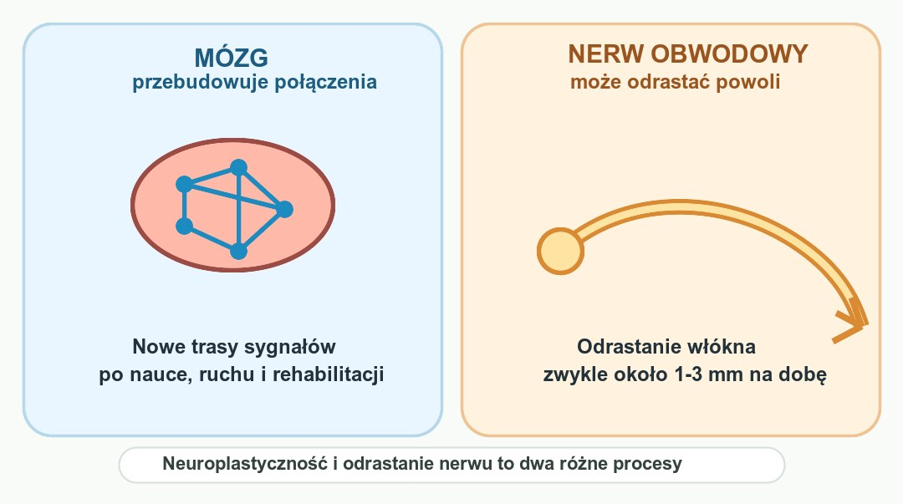

Układ nerwowy potrafi się zmieniać i częściowo naprawiać, ale nie na każdym poziomie w ten sam sposób. Mózg przebudowuje połączenia między neuronami, nerwy obwodowe odrastają powoli i ograniczenie po ograniczeniu, a niektóre uszkodzenia w ośrodkowym układzie nerwowym pozostają w dużej mierze trwałe. Sprawdzamy, co na temat regeneracji układu nerwowego faktycznie pokazują badania.
Szybka odpowiedź
U osób po 50 regeneracja układu nerwowego jest możliwa tylko w określonym zakresie: mózg najczęściej odzyskuje sprawność przez neuroplastyczność, czyli przebudowę połączeń, a nerw obwodowy może odrastać zwykle około 1-3 mm na dobę, więc przy dłuższym uszkodzeniu potrzebuje tygodni lub miesięcy i kontroli lekarza albo fizjoterapeuty.
Kluczowe wnioski
- Mózg potrafi przebudowywać połączenia między neuronami (neuroplastyczność) przez całe życie, ale to nie to samo co odrastanie uszkodzonych włókien nerwowych.
- Nerwy obwodowe potrafią się regenerować fizycznie, ale w tempie około 1 do 3 milimetrów na dobę, co przy dłuższych uszkodzeniach oznacza wiele miesięcy oczekiwania.
- To, czy w dorosłym mózgu powstają nowe neurony w hipokampie, jest wciąż przedmiotem naukowego sporu – dowody są mieszane i zależą od metody badania.
- Sen, regularny ruch i ograniczenie przewlekłego stresu to trzy filary najlepiej potwierdzone w badaniach jako wspierające funkcjonowanie układu nerwowego.
Czym właściwie jest regeneracja układu nerwowego?
Regeneracja układu nerwowego to dwa procesy. Pierwszy to neuroplastyczność: mózg tworzy i przebudowuje połączenia przez całe życie. Z tym mechanizmem łączy się temat sakad i supresji sakadycznej podczas widzenia. Drugi proces to odrastanie uszkodzonych włókien, głównie w nerwach obwodowych.
To rozróżnienie jest istotne, bo popularne hasło „regeneracja nerwów” często miesza oba zjawiska. Mózg po udarze czy urazie może częściowo odzyskać funkcje dzięki temu, że zdrowe obszary przejmują zadania uszkodzonych, wykorzystując istniejącą plastyczność sieci neuronalnej, a nie odbudowę zniszczonych komórek. Podobnie działa nauka ruchu opisana w planie trening 3x30 dla osób po 50.
Nerwy obwodowe – te biegnące poza mózgiem i rdzeniem kręgowym, na przykład w ręku czy nodze – działają inaczej. Po przecięciu czy uszkodzeniu włókno może odrosnąć wzdłuż istniejącej osłonki, prowadzone przez komórki Schwanna, ale jest to proces powolny i często niepełny.

Skąd wiemy, że mózg i nerwy potrafią się regenerować?
Dowody na regenerację układu nerwowego pochodzą z kilku niezależnych źródeł badawczych: obrazowania mózgu osób uczących się nowych umiejętności, obserwacji pacjentów po udarze odzyskujących funkcje ruchowe oraz badań histologicznych nerwów obwodowych po urazach. Każdy z tych obszarów pokazuje inny rodzaj zmiany, dlatego nie da się mówić o jednej, uniwersalnej regeneracji.
W przypadku nerwów obwodowych dowody są najbardziej bezpośrednie: chirurdzy i neurolodzy od dekad obserwują i mierzą tempo odrastania włókien po urazach, korzystając z testów czucia i przewodnictwa nerwowego. To jeden z niewielu procesów regeneracyjnych w ciele, który da się dosłownie zmierzyć w milimetrach. Jeśli przy okazji układasz szerszą kontrolę zdrowia, pomocny będzie też przewodnik badania krwi po 50.
Trudniej jest z pytaniem, czy w dorosłym mózgu, konkretnie w hipokampie, powstają zupełnie nowe neurony. Jedne zespoły badawcze, analizując tkankę mózgową pod mikroskopem, nie znajdowały śladów młodych neuronów u osób po trzynastym roku życia. Inne, stosując odmienne metody utrwalania tkanki, zgłaszały obecność nowych neuronów nawet u osób w bardzo zaawansowanym wieku.
Ten spór trwa od lat i nie został jednoznacznie rozstrzygnięty. Najbardziej ostrożny wniosek, jaki można dziś sformułować, brzmi: powstawanie nowych neuronów w dorosłym mózgu jest prawdopodobne, ale najpewniej zachodzi w znacznie mniejszej skali niż u gryzoni, a różnice w wynikach badań w dużej mierze wynikają z metod przygotowania tkanki do analizy.
- Odrastanie nerwów obwodowych – potwierdzone i mierzalne w milimetrach na dobę
- Przebudowa połączeń w mózgu (neuroplastyczność) – potwierdzona, widoczna np. po udarze
- Powstawanie nowych neuronów w hipokampie dorosłego człowieka – wciąż przedmiot naukowego sporu
Jak sen wpływa na regenerację układu nerwowego?
Sen nie jest przerwą w pracy układu nerwowego, tylko jednym z głównych okien czasowych, w których zachodzi naprawa. W trakcie snu mózg porządkuje połączenia synaptyczne i odbudowuje zasoby energetyczne komórek nerwowych, co jest niezbędne do utrzymania sprawnej neuroplastyczności.
Badania nad rehabilitacją po udarze pokazują, że jakość snu jest bezpośrednio powiązana z tempem powrotu funkcji ruchowych i poznawczych. Gdy sen jest fragmentaryczny lub zbyt krótki, procesy naprawcze zachodzą wolniej, niezależnie od tego, jak intensywnie ktoś ćwiczy w ciągu dnia.
Co ważne, sen działa najlepiej w połączeniu z innymi nawykami, a nie w oderwaniu od nich. Przeglądy badań wskazują, że dobra jakość snu połączona z aktywnością fizyczną i odpowiednią dietą wzmacnia zdolności neuroplastyczne mocniej niż każdy z tych elementów osobno. Jeśli wybudzasz się nad ranem, zobacz też sen po 50 i pobudki około 3 w nocy.
Czy ruch fizyczny naprawdę wspiera regenerację nerwów?
Ruch fizyczny należy do najlepiej udokumentowanych czynników wspierających układ nerwowy. Regularny wysiłek, zwłaszcza o charakterze aerobowym i siłowym, zwiększa stężenie czynnika neurotroficznego BDNF, który wspiera przeżycie neuronów oraz tworzenie nowych połączeń nerwowych. Jeśli zaczynasz od zera, najpierw wybierz prosty plan z tekstu trening 3x30 dla osób po 50 .
Metaanalizy badań nad ćwiczeniami potwierdzają wzrost poziomu BDNF we krwi po treningu, zarówno u osób zdrowych, jak i z chorobami neurologicznymi. Efekt jest wyraźniejszy przy wysiłku o wyższej intensywności niż przy lekkiej, spokojnej aktywności.
Jedna z metaanaliz opublikowanych w czasopiśmie kardiologicznym Stroke wykazała, że wysokointensywny trening aerobowy podnosił poziom BDNF wyraźniej niż trening o niskiej lub umiarkowanej intensywności, choć autorzy zastrzegają, że różnice między badaniami w metodologii utrudniają precyzyjne porównania.
To nie oznacza, że tylko intensywny trening ma sens. Nawet umiarkowana, systematyczna aktywność – marsz, pływanie, jazda na rowerze – w badaniach wiąże się z korzystnymi zmianami biochemicznymi w układzie nerwowym, choć o mniejszej sile niż trening bardziej wymagający.
Jak przewlekły stres wpływa na neurony i da się to odwrócić?
Krótkotrwały stres nie jest dla układu nerwowego problemem, a bywa wręcz mobilizujący. Inaczej jest ze stresem przewlekłym: długotrwale podwyższony kortyzol wiąże się z kurczeniem się neuronów w hipokampie i korze przedczołowej, czyli obszarach odpowiedzialnych za pamięć i podejmowanie decyzji.
W badaniach na zwierzętach przewlekły stres prowadzi do wyraźnego cofania się rozgałęzień dendrytycznych neuronów w hipokampie i korze przedczołowej, przy jednoczesnym wzroście aktywności ciała migdałowatego, struktury odpowiedzialnej za reakcje lękowe. U ludzi obserwacje w badaniach obrazowych są zbieżne, choć związek przyczynowo-skutkowy wciąż jest przedmiotem dyskusji naukowej.
Dobra wiadomość jest taka, że część tych zmian wydaje się odwracalna po obniżeniu poziomu przewlekłego stresu i unormowaniu pracy osi podwzgórze-przysadka-nadnercza, choć badacze podkreślają, że nie wszystkie skutki długotrwałego stresu cofają się w pełni ani w tym samym tempie. Osobno rozbieram ten mechanizm w poradniku jak obniżyć kortyzol po 50.
Czy można świadomie wpływać na nerw błędny i układ autonomiczny?
Nerw błędny to główny kanał łączności między mózgiem a narządami wewnętrznymi, w tym sercem i układem trawiennym. Jego aktywność można ocenić pośrednio, mierząc zmienność rytmu serca (HRV), a badania pokazują, że da się ją realnie zwiększać konkretnymi technikami.
Metaanaliza badań nad treningiem fizycznym u osób prowadzących wcześniej siedzący tryb życia wykazała umiarkowany wzrost wskaźników HRV związanych z aktywnością przywspółczulną po wprowadzeniu regularnych ćwiczeń, co świadczy o poprawie napięcia nerwu błędnego.
Osobną metodą jest biofeedback HRV, czyli oddychanie w rytmie dopasowanym do własnej częstotliwości rezonansowej przy jednoczesnej obserwacji zapisu HRV w czasie rzeczywistym. Przeglądy badań wskazują, że taki trening może poprawiać równowagę autonomiczną i łagodzić objawy lęku, choć wciąż potrzeba więcej dużych, dobrze zaprojektowanych badań klinicznych.
Co jeść, żeby wspierać regenerację układu nerwowego?
Dieta wpływa na układ nerwowy przede wszystkim poprzez dostarczanie surowców do budowy błon komórkowych neuronów oraz substancji wspierających produkcję czynników wzrostu nerwów. Najlepiej przebadanym elementem w tym kontekście są kwasy tłuszczowe omega-3. Podobny kierunek żywienia opisuje dieta przeciwzapalna po 50 .
Metaanalizy badań z randomizacją wykazały, że suplementacja kwasami omega-3 istotnie podnosi poziom BDNF we krwi, a efekt jest wyraźniejszy przy suplementacji dłuższej niż dziesięć tygodni i przy dawkach nieprzekraczających około 1500 miligramów dziennie.
Poza omega-3 badacze wskazują też na znaczenie ograniczenia nadmiaru kalorii, regularnych posiłków bogatych w warzywa i błonnik oraz unikania długotrwałych stanów zapalnych związanych z dietą wysokoprzetworzoną, choć te obszary są przebadane słabiej niż sama suplementacja omega-3.
Ile trwa regeneracja uszkodzonego nerwu obwodowego?
Czas regeneracji nerwu obwodowego zależy głównie od miejsca urazu i odległości, jaką musi pokonać odrastające włókno nerwowe. To jeden z niewielu obszarów neurologii, w którym badacze podają konkretną, powtarzalną liczbę – nie jest to jednak liczba, która działa na korzyść pacjenta przy dłuższych dystansach.
Przeglądy kliniczne wskazują na tempo regeneracji rzędu jednego do trzech milimetrów na dobę, przy czym w odcinku bliższym urazu proces bywa nieco szybszy niż w odcinku dalszym. Oznacza to, że przy uszkodzeniu wymagającym pokonania kilkunastu centymetrów regeneracja może trwać wiele miesięcy.
Warto też wiedzieć, że regeneracja anatomiczna nie zawsze oznacza pełny powrót funkcji. Odrastające włókno musi jeszcze trafić do właściwego mięśnia czy receptora czuciowego, a badacze podkreślają, że mniej niż połowa pacjentów po poważnych urazach nerwów odzyskuje bardzo dobrą sprawność ruchową lub czuciową.
Najczęściej zadawane pytania
Czy regeneracja układu nerwowego jest w ogóle możliwa?
Tak, ale trzeba odróżnić dwa procesy. Mózg zwykle poprawia działanie przez neuroplastyczność, czyli przebudowę połączeń. Fizyczne odrastanie dotyczy głównie nerwów obwodowych i bywa powolne, często około 1-3 mm na dobę.
Jak długo regeneruje się nerw obwodowy po urazie?
Najczęściej mówi się o tempie około 1-3 mm na dobę, ale wynik zależy od miejsca urazu, wieku, rodzaju uszkodzenia i rehabilitacji. Jeśli włókno musi pokonać kilkanaście centymetrów, poprawa może zająć wiele miesięcy.
Czy w mózgu dorosłego człowieka powstają nowe neurony?
To nadal jest sporne. Część badań tkanki hipokampa nie znajduje młodych neuronów u dorosłych, inne wykrywają je także w późnym wieku. Bezpieczny wniosek brzmi: neuroplastyczność jest pewna, a dorosła neurogeneza u ludzi ma mieszane dowody.
Czy ćwiczenia zwiększają poziom BDNF?
Tak, metaanalizy pokazują wzrost BDNF po regularnym wysiłku, zwłaszcza gdy trening jest bardziej wymagający niż bardzo lekki spacer. To nie jest dowód, że ruch odbuduje każdy uszkodzony nerw, ale mocny argument za systematyczną aktywnością.
Źródła
- Physical and Emotional Interventions in Modulating Neuroplasticity: A Narrative Review (PMC)
- Neuroplasticity and Nervous System Recovery: Cellular Mechanisms, Therapeutic Advances (PMC)
- Effects of Regular Exercise on Peripheral BDNF: A Meta-Analysis with Meta-Regression (PMC)
- Adult neurogenesis in humans: Dogma overturned, again and again? (Science Translational Medicine)
- Do new neurons grow in the adult human hippocampus? A review of the evidence (Exploration Publishing)
- Does Exercise Training Improve Cardiac-Parasympathetic Nervous System Activity? Systematic Review with Meta-Analysis (PMC)
- Harnessing non-invasive vagal neuromodulation: HRV biofeedback and SSP for autonomic regulation (PMC)
- Chronic stress, cortisol dysregulation, and neurodegenerative vulnerability (Frontiers in Aging Neuroscience)
- Changes in serum BDNF following supplementation with omega-3 fatty acids: Systematic Review and Meta-Regression (PubMed)
- Peripheral Nerve Reconstruction after Injury: A Review of Clinical and Experimental Therapies (BioMed Research International, Wiley)
- Regenerative Medicine: A New Horizon in Peripheral Nerve Injury and Repair (PMC)
Uwaga: Artykuł ma charakter informacyjny i edukacyjny. Nie zastępuje konsultacji lekarskiej, diagnozy ani leczenia.